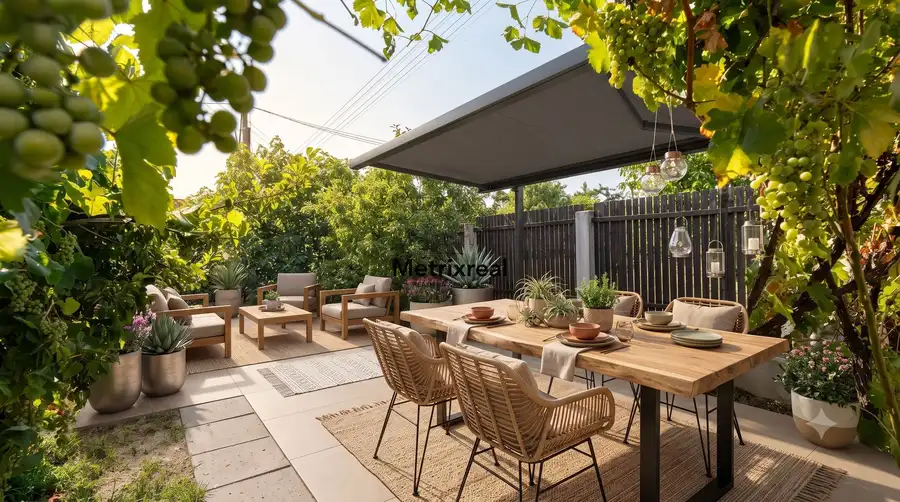
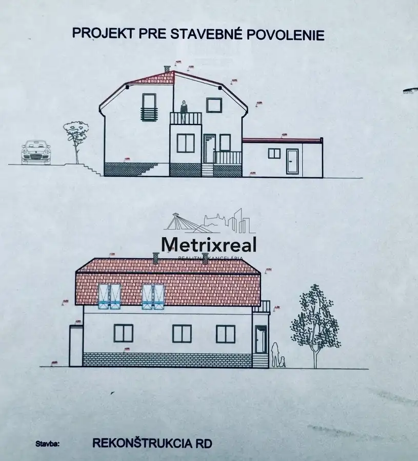
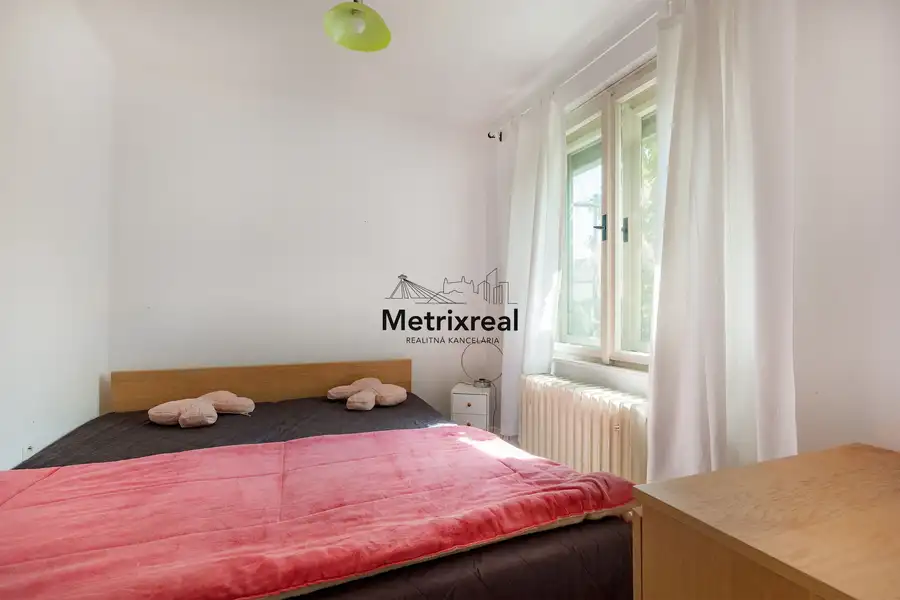
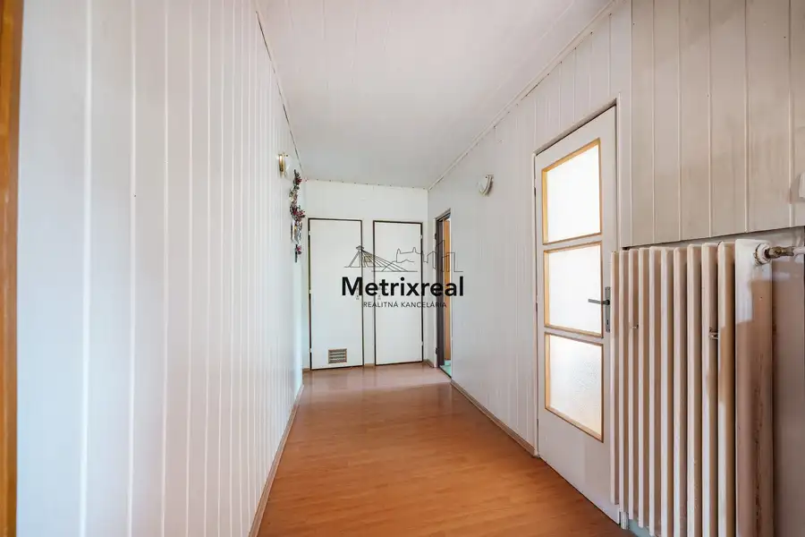
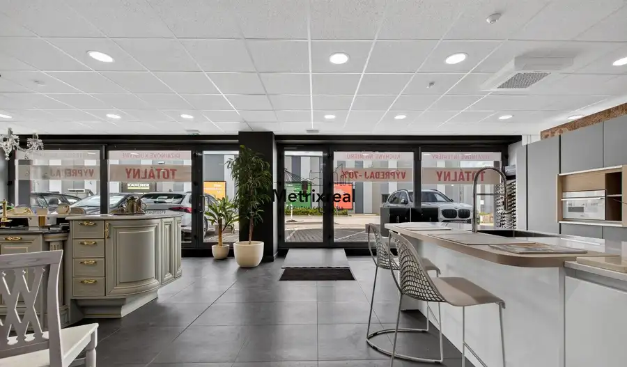
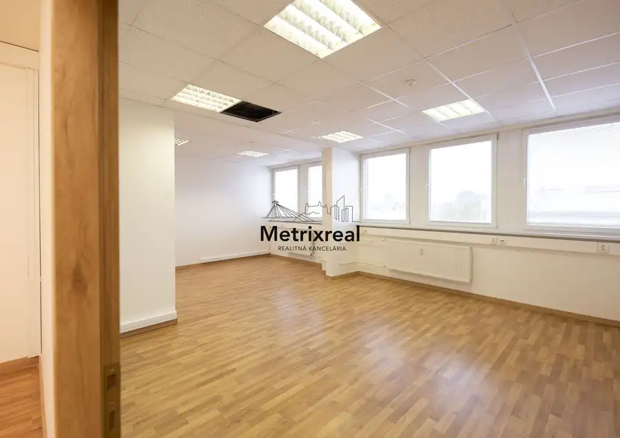
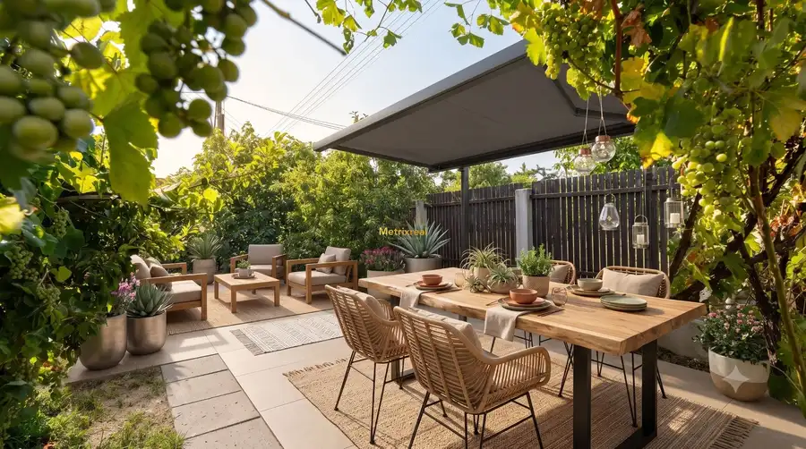

Samostatný RD s garážou, slnečným pozemkom a projektom rekonštrukcie – Krajinská ul., Podunajské Biskupice
Podunajské Biskupice, Bratislava




- Plocha122 m²
- StavČiastočná rekonštrukcia
- VlastníctvoOsobné
O nehnuteľnosti
Realitná kancelária Metrixreal Vám ponúka na predaj samostatne stojaci tehlový rodinný dom s garážou, slnečným pozemkom a projektom rekonštrukcie – Krajinská ul., Podunajské Biskupice.Súpisné č. 10449 (na parcele č. 204/1) spolu so samostatnou murovanou garážou súpisné č. 11451 (na parcele č. 204/2). Nehnuteľnosť sa nachádza v stabilizovanej časti Bratislavy II – mestská časť Podunajské Biskupice, na Krajinskej ulici č. 39.Tento dom v dobrej technickej kondícii predstavuje ideálnu príležitosť pre klientov, ktorí hľadajú komfortné mestské bývanie a chcú preskočiť mesiace byrokracie spojené s projektovaním. K nehnuteľnosti je totiž kompletne vypracovaný projekt rekonštrukcie pre stavebné povolenie, ktorý garantuje priestranné bývanie pre veľkú rodinu. ZÁKLADNÉ PARAMETRE A VÝMERYPozemok celkom: 295 m² (rovinatý, kompletne oplotený a celodenne slnečný)Orientácia pozemku: Juhovýchod (ideálna svetelnosť pre dvor aj obytné miestnosti)Zastavaná plocha domu (prízemie + prístavba): 122 m²Samostatná murovaná garáž: 24,3 m² (kolaudovaná v r. 1982, vybavená montážnou jamou)Inžinierske siete: Kompletné napojenie na mestský vodovod, kanalizáciu, plyn a elektrinu.UNIKÁTNY PRÍSTUP A PARKOVANIEJedným z najväčších benefitov tejto nehnuteľnosti je jej strategické osadenie na pozemku:Prístup z dvoch strán: Pozemok je prístupný z dvoch strán – z jednej hlavnej a z jednej vedľajšej ulice. Oba prístupy vedú zo spevnených komunikácií, ktoré sú štandardne využívané. Tento fakt výrazne uľahčuje logistiku pri rekonštrukcii a zabezpečuje maximálny komfort bývania.Parkovacie kapacity: Okrem parkovania priamo v garáži je možné bezproblémovo parkovať ďalšie vozidlá priamo pred garážou na prístupovej ceste, prípadne na vlastnom pozemku.STAVEBNO-TECHNICKÝ STAV A DISPOZÍCIAZ hľadiska stavebnej konštrukcie ide o poctivú, staticky veľmi stabilnú tehlovú stavbu. Základy sú betónové s funkčnou vodorovnou izoláciou proti vlhkosti, obvodové steny sú z pálenej tehly (hrúbka 30–50 cm) a strechu tvorí pevná krytina značky Bramac. Vykurovanie je zabezpečené plynovým kotlom s rozvodom do radiátorov.Prízemná časť (obytná): Aktuálne je kompletne udržiavaná a obytná. Dispozíciu tvorí zádverie, chodba, kuchyňa, kúpeľňa, samostatné WC, komora a 4 samostatné izby.Podkrovie (povalový priestor): Momentálne je neobývané a nie je prispôsobené na bývanie. Prístup je riešený klasickým schodiskom.Suterén (pivnica): Podzemný priestor slúži ako technické zázemie (pivnica/kotolňa, spoločenská miestnosť atď...)HOTOVÝ PROJEKT REKONŠTRUKCIE V CENEObrovským benefitom pre kupujúceho je kompletná projektová dokumentácia architektúry pre stavebné povolenie od licencovaného projektanta (Ing. Marek Majcher). Dve vizualizácie/rezy z projektu nájdete priamo vo fotogalérii. Samotný kompletný projekt (vrátane sietí, elektriky, vody, plynu a napojenia na kanalizáciu) postúpime na preštudovanie vážnemu záujemcovi.Čo projekt sľubuje a rieši?Projekt inteligentne využíva kvalitu súčasnej stavby a premieňa ju na moderné a priestranné bývanie pre veľkú rodinu. Počíta s nadmurovaním obvodových stien podkrovia, čím sa eliminujú nízke zošikmenia a vzniká plnohodnotné druhé podlažie s čistou svetlou výškou 2,59 m.Zo spodnej časti (výška stropu 2,90 m) vznikne veľkorysá denná zóna a v novom podkroví komfortná nočná časť s priestrannými spálňami a výstupom na veľkú loggiu/terasu nad prízemnou prístavbou. Samostatná murovaná garáž zostáva plne zachovaná.LOKALITA A DOPRAVNÁ LOGISTIKAUlica Krajinská v Podunajských Biskupiciach ponúka vynikajúcu občiansku vybavenosť a rýchlu doručiteľnosť:Autom: Okamžitý nájazd na obchvat D4/R7 zaručuje rýchly presun bez zdržania kamkoľvek v rámci Bratislavy a SR.Vlakom bez zápchy: Železničná stanica Podunajské Biskupice je v pešej dostupnosti. Vlakové spojenie Vás dopraví na Hlavnú stanicu za necelých 14 minút. V tesnej blízkosti sa nachádzajú aj zastávky MHD.Infraštruktúra: V okolí nájdete kompletnú sieť škôl, škôlok, obchodov, Nemocnicu s poliklinikou a voľnočasové vyžitie (blízke Múzeum obchodu).Cena nehnuteľnosti: 275 000 EUR (Cena je konečná, vrátane provízie RK)Uvedená cena zahŕňa kompletný realitný a právny servis zastrešený advokátskou kanceláriou, autorizáciu zmlúv a správne poplatky spojené s prevodom vlastníckych práv na katastri. Nehnuteľnosť je možné financovať prostredníctvom hypotekárneho úveru.Sme členom Realitnej únie SR, , , čo pre Vás znamená absolútnu garanciu férového, transparentného a bezpečného priebehu celej transakcie.KONTAKT PRE OBHLIADKU:Miroslav Kadnár – senior realitný maklér (v realitách od roku 2016)E-mail: kadnar@metrixreal.skMetrixreal - Realitná KanceláriaNeváhajte a dohodnite si obhliadku nehnuteľnosti a nahliadnutie do projektovej dokumentácie ešte dnes!
Parametre
- Druh
- Rodinný dom
- Druh domu
- Klasický dom
- Dátum zverejnenia
- 19. 05. 2026
- Energetický certifikát budovy
- nie je
- Energie
- 200
- Orientácia
- Južná, Juhovýchodná, Východná, Severovýchodná, Severná, Severozápadná
- Plocha pozemku
- 295 m²
- Počet izieb / miestností
- 5
- Počet kúpeľní
- 1
- Počet nadzemných podlaží
- 1
- Počet podzemných podlaží
- 1
- Počet spální
- 4
- Rok kolaudácie
- 2019
- Rok poslednej rekonštrukcie
- 2019
- Rok výstavby
- 1982
- Stav nehnuteľnosti
- Čiastočná rekonštrukcia
- Telekomunikácie
- Internet, Káblová TV
- Terén pozemku
- Rovinatý
- Typ
- Predaj
- Typ konštrukcie
- Zmiešaná
- Vlastníctvo
- Osobné
- Vybavenie
- Technická miestnosť
- Vykurovanie
- Ústredné
- Zastavaná plocha
- 150 m²
- Úžitková plocha
- 122 m²
Kde to je


Mohlo by Vás zaujímať

Komerčné priestoryNové 850 080 €PESTOVATEĽSKÁ | RUŽINOV | Reprezentatívny obchodný priestor 238 m² na prízemí s výkladmi pri IKEA a Avione | Kompletná rekonštrukcia | Bez provízie Ružinov, Bratislava 238 m²
Komerčné priestoryNové 751 291 €PESTOVATEĽSKÁ | RUŽINOV | Investičný kancelársky trakt 285 m² (celé 2. NP) s fungujúcimi nájomcami pri IKEA a Avione | Výnos od 1. dňa | Bez provízie Ružinov, Bratislava 285.12 m²
Rodinné domyNové 275 000 €Samostatný RD s garážou, slnečným pozemkom a projektom rekonštrukcie Podunajské Biskupice, Bratislava 5-izbový122 m²